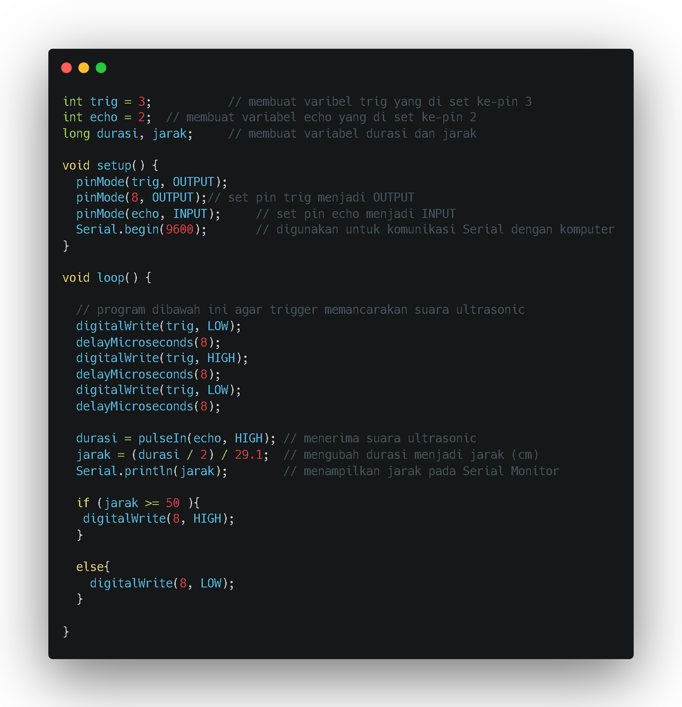

Cara menghidupkan LED dengan sensor ultrasonic
Cara kerja sensor ultrasonic, sebuah sinyal pulsa dengan durasi setidaknya 10 μS (10 mikrodetik) diterapkan ke pin Trigger. Setelah itu, sensor mentransmisikan gelombang ultrasonik delapan pulsa pada frekuensi 40 KHz. Pola 8-pulsa ini digunakan untuk sebuah penanda sinyal ultrasonik dari modul ini, yang memungkinkan receiver / penerima untuk membedakan pola yang ditransmisikan dari kebisingan ultrasonik sekitar.
Delapan pulsa ultrasonik bergerak melalui udara menjauh dari transmitter / pemancar mengarah ke benda atau obyek yang ada di depannya. Sementara itu pin Echo menjadi HIGH / TINGGI untuk mulai membentuk awal sinyal gema
Jika tidak ada sinyal ultrasonik yang dipantulkan atau diterima oleh receiver selama rentang 38 mS (mili detik), yang artinya tidak ada obyek atau benda maka sinyal Echo akan Timeout dan kembali menjadi LOW / RENDAH.
Sedangkan jika ada sinyal ultrasonik yang dipantulkan atau diterima oleh receiver, maka saat itu juga sinyal Echo langsung berubah menjadi LOW / RENDAH. Nah, lebar rentang waktu dari sinyal ECHO inilah yang digunakan untuk mengukur jarak antara sensor dengan obyek atau benda.
Sensor HC-SR04 memiliki spesifikasi sebagai berikut :
-Tegangan : 5V DC/p>
-Arus statis : < 2mA
-Level output : 5v – 0V
-Sudut sensor : < 15 derajat
-Jarak yg bisa dideteksi : 2cm – 450cm (4.5m)
-Tingkat keakuratan : up to 0.3cm (3mm)
Fungsi sensor ultrasonik HC-SR04 biasa digunakan untuk mendeteksi objek yang ada di depannya dengan memanfaatkan gelombang ultrasonik.
Datasheet Sensor Ultrasonik HC-SR04 :
1.Pin Trig (Trigger), trigpin Arduino berfungsi untuk memicu pemancaran gelombang ultrasonik. Gelombang akan terpancarkan saat pin ini diberikan logika HIGH.
2.Pin Echo, berfungsi untuk mendeteksi pantulan gelombang ultrasonik apakah sudah diterima atau belum. Pin Echo bernilai HIGH jika gelombang pantulan belum diterima dan bernilai LOW jika pantulan sudah diterima.
3.Pin VCC, berfungsi untuk mengoneksikan sensor ke power supply 5 volt Arduino. Jadi kamu bisa langsung mengoneksikan pin VCC ke pin 5V di Arduino.
4.Pin GND, berfungsi untuk mengoneksikan sensor ke power supply ground. Sama dengan pin VCC, kamu juga bisa langsung menghubungkan pin GND ini ke pin GND Arduino.
Komponen Sensor Ultrasonik HC-SR04 :
1.Piezoelektrik
Fungsi dari komponen ini adalah mengubah energi listrik menjadi energi mekanik yang menghasilkan gelombang ultrasonik maupun sebaliknya.
2.Transmitter
Yaitu komponen yang berfungsi untuk memancarkan gelombang ultrasonik yang dihasilkan oleh piezoelektrik ke objek yang ingin diukur jaraknya
3.Receiver
Berfungsi untuk menerima pantulan gelombang ultrasonik dari objek yang ingin diukur jaraknya.
Berikut rangkaian di tinkercad :

